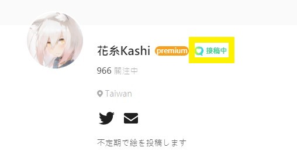

問題一:2d模型的取得管道
在講取得管道前，應該要先理解模型是怎麼來的
首先，模型的製作要經過插畫，再來才是模型的製作
取得的方式分成兩種，一種是直接買現成的，另一種是逐步委託處理
逐步委託處理的部分又有分自己處理跟一條龍的合作管道
講了這麼多，那就一步一步詳細解釋
一、直接購買現成的模型
這部分台灣目前還沒有很普及
在我知道的範圍內中文圈只有兩種管道可以買到現成模型
一個是在社群上，像是有人會以推文的方式以個人名義販售
第二個是模型師手上，可能會有模型師放在自己的頁面販售
但是這兩點都不是常駐的，也就是說，沒有固定生產現成的模型出來賣
原因無他，模型在台灣市場不是很廣泛，且模型是個很客製化的東西，如果無法滿足客人審美，是非常有滯銷可能的
但是如果在日本，那又是另一回事了，日本這方面較為成熟，所以是可以在網路上找到現成的模型販售的，舉個例子:
我在yahoo.jp上搜尋”vtuber モデリング 販売“

基本上就可以看到一些頁面，隨便點一個進去，看到イラスト，底下分類有一個モデリング，點進去就可以看到一些模型的販售資料了
有一些是真的放上來賣的，有一些是放展示品，寫一個大概委託的價格
直接放上來賣的，也有很多的項目可以選，像是加飾品之類的，雖然大部分都是要再加錢
有點類似你點一個套餐，然後選擇飲料換可樂要+5元的那種感覺

二、逐步委託處理
如同第一段所講的，第二種方式是逐步委託處理
這種方式可以做到非常符合自己喜好的模型
因為所有東西都是開工前協調好的
舉凡是:性別、飾品、角色印象…等等
通常會先找到你喜歡繪師，進一步的詢問
但是這樣很麻煩，所以我會推薦另一種方法
通常想做vtuber或是想要有一個模型的人
都是先看過某一個角色，覺得很棒，才有這樣的想法對吧?
那反過來說，為什麼不直接找那個角色的繪師就好呢?
舉例:
以我來說，我會把繪師跟模型師的資訊，放在我有經營的平台的某處，可能是推特或是youtube，像我就是放在我的youtube頻道內的簡介底下
這樣就可以直接確定這位繪師有繪製模型圖的經驗了

那假設是已經有心儀的繪師可是不確定有沒有接委託或是繪製模型圖的經驗呢?
很簡單，直接把繪師的名子丟到google上面
既然是繪師，肯定有放作品的平台或帳號通常都會些是否有接受委託(依賴)，有的話直接透過電子郵件或是繪師指定的方式聯絡即可
以kashi先生的pixiv舉例:

模型師的部分，會比繪師難找一點，我是建議直接找到一個你喜歡的現役vtuber，然後看他的模型師是誰再去聯絡
不然就是直接上google搜尋”vtuber模型製作”去尋找
三、一條龍的合作管道
這部分其實就跟上面很像，只是有些繪師跟模型師有合作的關係，為了是要讓工作更有效率，成品更好
因為拆圖的部分，繪師的拆圖可能會和模型師預想的有落差，模型師雖然沒有明講，但是收到圖大多數都會先確認圖層，然後大概整理一下圖層
合作的好處就是可以極大效率的進行簡化這個步驟
如果是有合作的繪師跟模型師，通常都是已經有經驗的接案者
一般他們直接在很明顯的地方標示出來，或是再接委託的時候就提出來，跟你確認有沒有意願直接給他們一條龍式的處理，至於收費方式就是看他們規定了

問題二:有app可以進行臉部的追蹤嗎?
再如何成為vtuber2021裡面已經有類似解答了，可以參考
會有這個問題大概都是在知道hololive是用這種方式進行的，所以會提出來
但是hololive的軟體我推測應該是他們公司自己內部的，並沒有開放給一般人使用
所以一般人要用一樣使用vtuber studio即可(ios系統確定可行，安卓沒研究)
問題三:模型的價格
大家應該都發現了
模型的價格其實是沒有很公開透明的
原因很簡單，這種藝術類的東西，價格是很難界定的
好比說一幅畫，作者成名前的價格跟成名後的價格是不一樣的
模型也是同理
影響價格的因素，除了技巧，可能還包含名氣，或是接案經驗…等等
總之委託前先詳細的確認價格”區間”
會說區間的原因是因為，一般來說就算是到了談價階段，也未必會直接給你一個很明確的數字
畢竟繪製的途中會去修正，作品完成可能你覺得有不足的地方也還要改
這些事情都要花時間處理，所以就會影響到價格
這件事我也沒辦法多談，藝術的東西價格是主觀的，只能呼籲尊重專業
問題四:不想用麥克風加耳機，耳麥可以嗎?
同樣在如何成為vtuber2021中有解答
沒有什麼東西是不行的，重點在於呈現出來的效果
一個剛出道的個人勢用幾十萬的配備
跟一個職業聲優用千元出頭的配備
你說誰的效果好?別人變身器裝在喉嚨裡怎麼跟他比?
一個國家音樂廳隔音級別的房間
跟一個棚子架在工廠旁邊的環境
這種情況已經不是用設備去解決了
這樣說大概了解了吧，看自己預算
解決最根本的問題、做在能力範圍內做的到的事才是重點